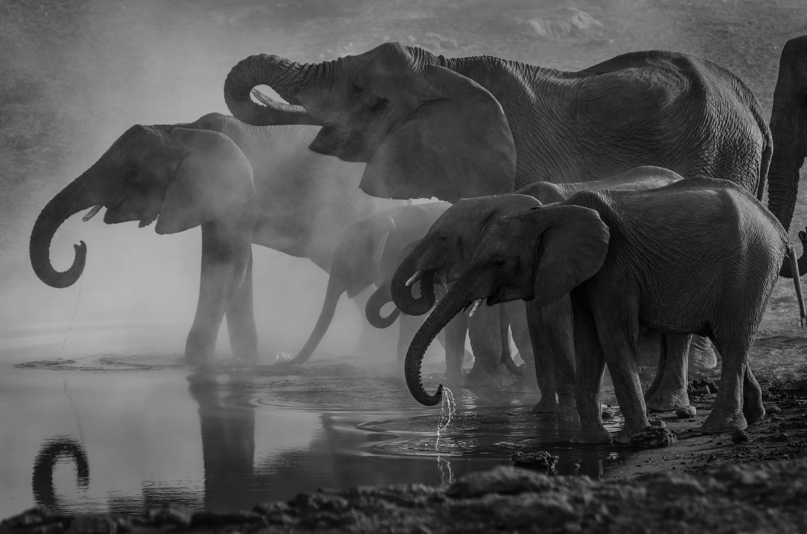

ALTRE
PROSPETTIVE
La percezione animale oltre il punto di vista umano
Invece di entrare in punta di piedi negli Umwelten degli altri animali, abbiamo costretto tutte le creature a vivere nei nostri, travolgendole con gli stimoli che noi produciamo. Abbiamo riempito la notte di luce, il silenzio di rumore, il terreno e l'acqua di molecole sconosciute.
Marco Inguscio, «L’altro mondo della percezione animale», Il Tascabile